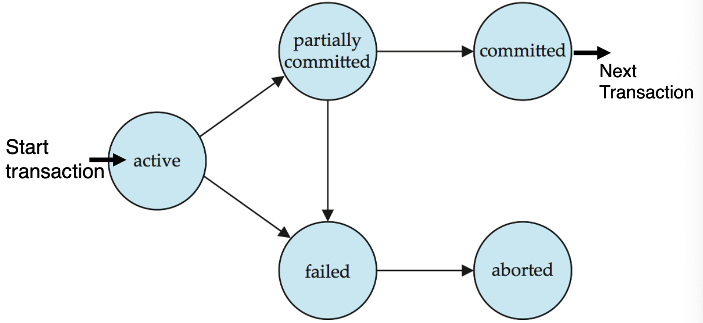
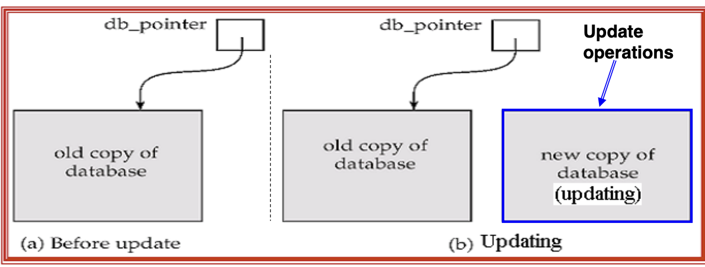
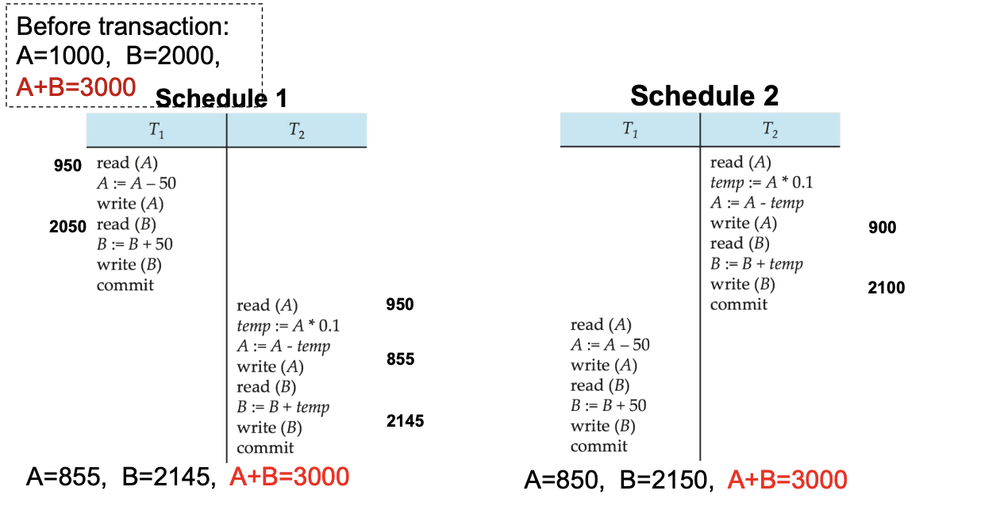
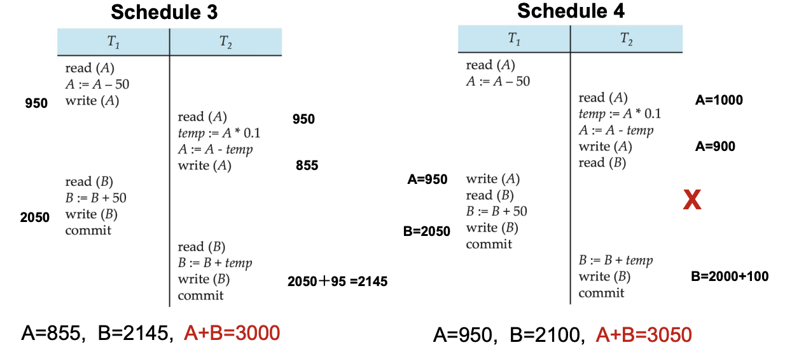
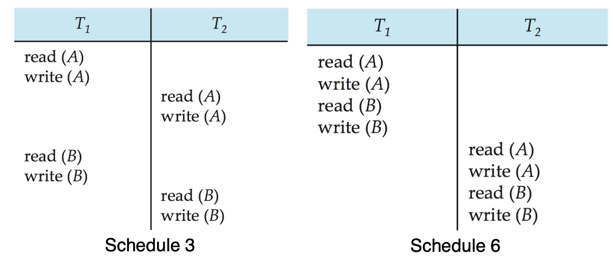
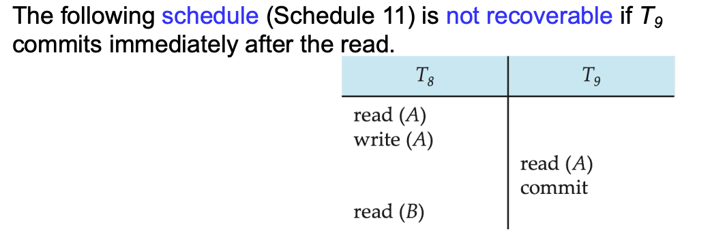
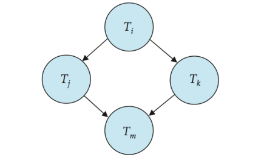

Transactions¶
12.1 Transaction Concept¶
对于一个 DBMS，有两类问题必须被解决：
- 来自多个用户或者程序的指令需要并发执行
- 各种各样的异常，例如硬件损坏、系统崩溃
为了在系统并发执行时，维护系统的正确性、一致性以及完整性，引入了 Transaction 的概念。==Transaction（事务）==是数据库中的一个程序执行单元，它会访问并可能更新若干数据项
- 一个 transaction 通常由若干条 SQL 语句组成，并以
COMMIT或ROLLBACK结束 - 事务开始时应看到一个 consistent database
- 事务执行过程中数据库可能暂时处于不一致状态，但成功提交后数据库必须重新回到一致状态。
Abstract
Transaction 的意义是：
把一组读写操作包装成一个可靠的逻辑单元，使数据库在故障和并发环境下仍能保持正确。
12.2 ACID Properties¶
Example: Fund Transfer
考虑从账户 \(A\) 向账户 \(B\) 转账 \(50\)：
1. read(A)
2. A := A - 50
3. write(A)
4. read(B)
5. B := B + 50
6. write(B)
这个例子贯穿事务的四个重要性质：
- Atomicity
- Consistency
- Isolation
- Durability
事务必须满足 ACID properties：
| 性质 | 含义 |
|---|---|
| Atomicity | 事务的所有操作要么全部生效，要么全部不生效 |
| Consistency | 事务从一个一致的状态出发，提交后仍应保持数据库一致 |
| Isolation | 并发执行时，每个事务应感觉自己像是在独占数据库 |
| Durability | 事务一旦提交，其结果必须永久保存，即使之后发生故障 |
12.2.1 Atomicity¶
事务中的所有操作要么全部完成，要么事务对数据库的影响完全不反映出来。
在转账例子中：
- 如果执行到
write(A)之后、write(B)之前系统崩溃。 - 账户 \(A\) 已经减少 \(50\)，账户 \(B\) 还没有增加 \(50\)。
- 此时数据库处于不一致状态。
系统必须保证：部分执行的事务不能留下可见结果，如果事务未能完成，应撤销已经执行的更新。
12.2.2 Consistency¶
如果事务开始时数据库是一致的且事务本身逻辑正确，那么事务成功提交后，数据库仍然一致。
转账例子中，一致性要求 \(A + B\) 在事务执行前后保持不变。
- 更一般地，一致性约束包括：
- 显式指定的 integrity constraints：
- primary key
- foreign key
CHECKconstraints
- 隐式业务约束：例如所有账户余额总和、贷款总额与现金余额之间的关系
- 显式指定的 integrity constraints：
Warning
错误的事务逻辑可能破坏 consistency。DBMS 只能保证事务机制本身可靠，不能自动修正应用层的错误业务逻辑。
12.2.3 Isolation¶
多个事务并发执行时，每个事务不应看到其他事务尚未完成的中间状态。
在转账例子中：
- \(T_1\) 执行完
write(A)后，\(A\) 已经减少。 - 但此时 \(B\) 还没有增加。
- 如果另一个事务 \(T_2\) 在这个时刻读取 \(A\) 和 \(B\)，就会看到错误的总和。
T1:
1. read(A)
2. A := A - 50
3. write(A)
4. read(B)
5. B := B + 50
6. write(B)
T2:
read(A)
read(B)
print(A+B)
如果 \(T_2\) 在 \(T_1\) 的步骤 3 和步骤 6 之间执行，就可能读到不一致状态。
最简单的隔离方式：串行执行事务，即一个事务结束后再执行下一个。但这样会牺牲并发带来的性能，因此实际 DBMS 会使用 concurrency control。
12.2.4 Durability¶
一旦系统通知用户事务已经完成，事务对数据库的更新就必须永久保存。即使之后发生软件或硬件故障，提交结果也不能丢失。
在转账例子中：
- 如果系统已经告诉用户转账成功。
- 那么即使随后系统崩溃，\(A\) 减少 \(50\)、\(B\) 增加 \(50\) 的结果也必须保留。
12.2 Transaction State¶
一个 transaction 在生命周期中会经历若干状态

- Active：初始状态，事务正在执行中
- Partially Committed：事务的最后一条语句已经执行完成，但系统还需要完成提交相关工作。
- Failed：系统发现事务不能继续正常执行。
- Aborted：事务已经回滚，数据库被恢复到该事务开始之前的状态。
- 事务 abort 后有两个选择：
- Restart the transaction：仅当失败不是事务内部逻辑错误时才适用
- Kill the transaction：如果事务本身逻辑错误，就不应重启
- 事务 abort 后有两个选择：
- Committed：事务成功完成，对数据库的更新已经被确认并持久保存。
12.3 Implementation of Atomicity and Durability¶
DBMS 中的 recovery-management component 负责支持：Atomicity 以及 Durability
Shadow-Database Scheme¶
一个简单但低效的方案：
- 系统维护一个指针
db_pointer，指针始终指向当前一致的数据库副本 - 所有更新都写入新创建的数据库副本，原来的数据库副本称为 shadow copy，保持不变
- 如果事务 abort：直接删除新副本，
db_pointer仍然指向原来的 shadow copy - 如果事务 commit：
- 将新副本中所有内存页写入磁盘（在 Unix 中可用类似
flush的操作确保写盘） - 将
db_pointer改为指向新副本，新副本成为当前数据库并删除旧副本
- 将新副本中所有内存页写入磁盘（在 Unix 中可用类似
- 如果事务 abort：直接删除新副本，

- 指针切换必须是原子的
- 如果指针切换前崩溃，系统仍使用旧副本；如果指针切换后崩溃，系统使用新副本
- 每次事务都复制整个数据库，开销极大；难以支持多个事务并发更新。
- 实际系统更常用日志恢复技术（后续会介绍）
12.4 Concurrent Executions¶
多个事务可以在数据库系统中并发执行。
- 并发执行的优点：
- 提高处理器和磁盘利用率
- 一个事务等待磁盘 I/O 时，另一个事务可以使用 CPU
- 一个事务使用 CPU 时，另一个事务可以读写磁盘
- 提高事务吞吐量：单位时间内完成更多事务
- 降低平均响应时间：短事务不必一直排在长事务后面等待
- 提高处理器和磁盘利用率
- 并发执行的问题：
- 即使每个事务单独执行都能保持 consistency，它们交错执行时仍可能破坏 consistency
- 因此 DBMS 需要 concurrency control schemes（并发控制方案），控制并发事务之间的交互，实现 isolation，防止并发执行破坏数据库一致性。
Tip
Concurrency control 是 DBMS 的重要职责之一。
本讲先研究并发执行的正确性标准，如 serializability、recoverability 等；具体并发控制协议后续（Chapter15）再讲。
Schedules¶
Schedule（调度）：多个并发事务中各条指令实际执行的时间顺序。
一个合法 schedule 必须满足：
- 包含这些事务的所有指令。
- 保持每个事务内部指令的原始顺序。
Serial Schedule¶
串行调度：每个事务完整执行完后，才开始执行下一个事务，不同事务之间没有交错
- 如果每个事务都能保持数据库一致性，则任意 serial schedule 都能保持数据库一致性。

Concurrent Schedule¶
并发调度：多个事务的操作交错执行，可能更高效，但不一定正确。

12.5 Serializability¶
Serializability（可串行化） 是判断并发调度正确性的核心标准
- 一个 schedule 如果与某个 serial schedule 等价，则称为 serializable，不同的等价定义会产生不同的可串行化概念：
- Conflict serializability
- View serializability
Simplified View of Transactions
为了讨论 serializability，通常把事务简化为对数据项的读写序列，其他计算步骤只影响事务内部的局部变量，不直接影响数据库状态。
12.5.1 Conflict Serializability¶
Conflicting Instructions¶
设 \(l_i\) 是事务 \(T_i\) 的一条指令，\(l_j\) 是事务 \(T_j\) 的一条指令，并且 \(i \ne j\)。如果存在某个数据项 \(Q\)，满足 \(l_i\) 和 \(l_j\) 都访问 \(Q\)，且至少有一条指令写 \(Q\)，则称 \(l_i\) 和 \(l_j\) conflict。
- 两个读操作可以交换顺序，不影响结果。
- 只要涉及写操作，顺序就可能影响读到的值或最终写入的值。
Conflict Equivalent¶
- 如果 schedule \(S\) 可以通过一系列交换变成 schedule \(S'\)，并且每次交换的都是 non-conflicting instructions，则称：\(S \equiv_c S'\)
- 即 \(S\) 和 \(S'\) conflict equivalent
- 如果一个 schedule 与某个串行调度是 conflict equivalent 的，则称该 schedule 是 conflict serializable
Example

- Schedule 3 can be transformed into Schedule 6, a serial schedule where \(T_2\) follows \(T_1\), by series of swaps of non-conflicting instructions.
- Therefore Schedule 3 is conflict serializable.
12.5.2 *View Serializability¶
View serializability 比 conflict serializability 更宽松
View Equivalent¶
两个 schedule \(S\) 和 \(S'\) 对同一组事务是 view equivalent，当且仅当对每个数据项 \(Q\) 都满足以下三个条件：
- Initial read 相同
- 如果在 \(S\) 中，事务 \(T_i\) 读取的是 \(Q\) 的初始值；
- 那么在 \(S'\) 中，\(T_i\) 也必须读取 \(Q\) 的初始值。
- Reads-from 关系相同
- 如果在 \(S\) 中，事务 \(T_i\) 执行
read(Q)时，读到的是事务 \(T_j\) 写入的值； - 那么在 \(S'\) 中，\(T_i\) 也必须读到同一个 \(T_j\) 写入的值。
- 如果在 \(S\) 中，事务 \(T_i\) 执行
- Final write 相同
- 如果在 \(S\) 中，最终写入 \(Q\) 的事务是 \(T_i\)；
- 那么在 \(S'\) 中，最终写入 \(Q\) 的事务也必须是 \(T_i\)。
View Serializable¶
如果 schedule \(S\) 与某个串行调度 view equivalent，则称 \(S\) 是：
view serializable
- 每个 conflict-serializable schedule 都是 view-serializable
- 但并不是每个 view-serializable schedule 都是 conflict-serializable
View serializability 能接受一些 conflict serializability 排除的调度，特别是包含 blind write（一个事务写某个数据项之前没有先读它） 的情况。
12.5.3 Other Notions of Serializability¶
除了 conflict / view serializability，还可以定义其他等价标准，例如只要求最终数据库状态与某个 serial schedule 相同。但这种标准通常太弱，它可能忽略事务中读到的中间值，因此不能很好地保证事务语义。
12.6 Recoverability¶
Serializability 主要关注并发执行是否等价于串行执行，但还需要考虑故障恢复问题：如果某个事务 abort，其他读过它数据的事务怎么办？
12.6.1 Recoverable Schedule¶
Recoverable schedule（可恢复调度）：如果事务 \(T_j\) 读取了事务 \(T_i\) 之前写入的数据项，那么 \(T_i\) 的 commit 必须出现在 \(T_j\) 的 commit 之前。
- 否则会出现问题：\(T_j\) 已经提交，但它读到的数据来自尚未提交的 \(T_i\)，如果 \(T_i\) 后来 abort，\(T_j\) 的提交结果就建立在无效数据上。
Bug

- 如果 \(T_8\) 需要撤销，那么它关于 \(A\) 的修改会无效，但是 \(T_9\) 读取的是 \(T_8\) 修改后的数值，因此它使用了一个从未真正存在过（或者说是错误的）的数据值完成了它的任务。
12.6.2 Cascading Rollbacks¶
Cascading rollback（级联回滚）：一个事务失败，导致一系列依赖它的事务也必须回滚。
T10 写 X
T11 读 X
T12 读 T11 写出的某个值
T10 abort
如果 \(T_{10}\) abort：
- \(T_{11}\) 读过 \(T_{10}\) 写的未提交数据，因此必须回滚
- \(T_{12}\) 又依赖 \(T_{11}\)，也可能必须回滚
12.6.3 Cascadeless Schedules¶
Cascadeless schedule（无级联调度）：对任意事务 \(T_i\) 和 \(T_j\)，如果 \(T_j\) 要读取 \(T_i\) 写过的数据项，那么 \(T_i\) 必须已经提交。
- 也就是说只允许事务读取已经提交的数据：
性质：
- 每个 cascadeless schedule 都是 recoverable
- 但 recoverable schedule 不一定是 cascadeless
Abstract
Recoverable schedule 要求“读了别人数据的事务，不能比写者先提交”；
Cascadeless schedule 更严格，要求“只能读已经提交的数据”。
12.7 Implementation of Isolation¶
- 每次只允许执行一个事务可以保证串行调度，但提供的并发度很差。
- 为了数据库的一致性，调度必须 conflict serializable 或 view serializable，并且是可恢复的，最好还是无级联的（cascadeless）
- 并发控制方案（Concurrency-control schemes）是在他们允许的并发程度和产生的开销之间进行权衡
- 一些方案只允许生成冲突可串行化的调度，而另一些方案则允许生成非冲突可串行化的视图可串行化调度。
12.8 Transaction Definition in SQL¶
- 数据操作语言（DML）必须包含一种用于指定构成事务的一组操作的构造
- 即可以让多个指令（例如
SELECT、INSERT、UPDATA）同属于一个事务
- 即可以让多个指令（例如
- 在 SQL 中，事务隐式开始：执行某条 SQL 语句时，如果当前没有事务，就自动开始新事务
- 事务结束方式：
COMMIT：当前事务成功结束，所有更新永久写入数据库，事务进入 committed 状态ROLLBACK：当前事务失败或被用户撤销，更新被撤销，数据库恢复到事务开始前的状态
- 在几乎所有的数据库系统中，默认情况下，如果每条 SQL 语句执行成功，它也会隐式地自动提交。
- 隐式提交可以通过数据库指令关闭，例如在 JDBC 中使用
connection.setAutoCommit(false)
- 隐式提交可以通过数据库指令关闭，例如在 JDBC 中使用
12.9 Testing for Serializability¶
12.9.1 Precedence Graph¶
测试 conflict serializability 的常用方法是构造 precedence graph（优先图）
给定一个 schedule，构造有向图：
- 顶点：事务 \(T_1,T_2,\dots,T_n\)。
- 边：如果 \(T_i\) 和 \(T_j\) 的某些操作 conflict，且 \(T_i\) 的冲突操作先于 \(T_j\) 的冲突操作，则加入边 \(T_i \rightarrow T_j\)，边可以标注冲突的数据项：
12.9.2 Test for Conflict Serializability¶
定理：一个 schedule 是 conflict serializable，当且仅当它的 precedence graph 是 acyclic 的

- 如果 precedence graph 有环：
- 不存在与之 conflict equivalent 的 serial schedule。
- 因此 schedule 不是 conflict serializable。
- 如果 precedence graph 无环：
- schedule 是 conflict serializable。
- 可以对图做 topological sorting，得到一个等价的 serial order。
12.9.3 *Test for View Serializability¶
View serializability 的测试比 conflict serializability 更复杂, 这是个 NP-c 问题
- 需要检查 reads-from 关系。
- 需要检查每个数据项的 final write。
- blind writes 会让等价关系更难判定。
一般来说：
- conflict serializability 容易测试。
- view serializability 更宽松但测试代价高。
12.9.4 Concurrency Control vs. Serializability Tests¶
- 并发控制协议允许并发调度，但能确保这些调度是冲突可串行化（或视图可串行化）的，并且是可恢复且无级联的。
- 并发控制协议通常不会在优先图（precedence graph）生成时去检查它。
- 相反，协议会强制施加一种规则（纪律），从而避免产生非可串行化的调度。
- 我们将在第15章学习这些协议。
- 不同的并发控制协议在“允许的并发程度”和“产生的开销”之间提供了不同的权衡。
- 可串行化测试（判定方法）有助于我们理解为什么一个并发控制协议是正确的。